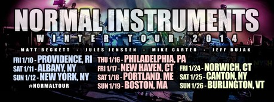

Viewing events from January, 2014
Subscribe to all events in Google Calendar/Outlook/iCal
Blue Boy Productions with FDOT and Dabu - last show of the Tuesday night residency
Jan. 28, 2014, 10 p.m. - Jan. 29, 2014, 2 a.m. at Wonder Bar

The last weekly installment of Music Ecology @ Wonder Bar evarrrrrrrrrrrr!
Featuring residents and co founders of Music Ecology: Blue Boy Productions live
http://www.blueboyproductions.net
w/ support from:FDOT (Music Ecology co-founder and former resident)Dabu (Music Ecology OG ...
The Drop presents The Music Ecology Farewell ft. Professor Pious, Alex Russo, & The Mad Mauritian $$ 2 for 1 b4 11pm! $$
Jan. 26, 2014, 10 p.m. - Jan. 27, 2014, 2 a.m. at Phoenix Landing

The Drop! True Crew's weekly party 1-26-14
This week it is my pleasure to pay homage to one of the nights that helped revive the electronic music scene here in Boston, Music Ecology. Its been a crazy 5 years ...
Psymbionic with support by Mindstream
Jan. 21, 2014, 10 p.m. - Jan. 22, 2014, 2 a.m. at Wonder Bar
Welcome to our second to last show as part of our almost 5 year running Tuesday night residency at Wonder Bar!
Our guest this evening is Psymbionic!
$5, 21+
Psymbionic
Cresting the modern wave of electronic producers, Psymbionic creates aural ...
Normal Instruments (only Boston show!) + Beta Ghosts
Jan. 19, 2014, 10 p.m. - Jan. 20, 2014, 2 a.m. at Wonder Bar

Music Ecology Presents:
2 sets of Normal Instruments + Beta Ghosts
Normal Instruments is Michael Carter from The Indobox, Jules Jenssen from Higher Organix, Matt Beckett from Cosmic Dust Bunnies... and Jeff Bujak.
http://www.facebook.com/normalinstruments
Beta Ghosts
Ghosts-in-training ...
Ali Berger, JSB, eelko, & M-Cue
Jan. 14, 2014, 10 p.m. - Jan. 15, 2014, 2 a.m. at Wonder Bar
Welcome to the second of the last 4 Tuesdays of our Wonder Bar residency. The line up this week features gentlemen who have graced our stage many times over the past four and a half years. It's a real ...
Archive
2014
2013
- December (1)
- November (4)
- October (2)
- September (5)
- August (2)
- July (4)
- June (4)
- May (3)
- April (5)
- March (5)
- February (6)
- January (4)
2012
- December (6)
- November (6)
- October (6)
- September (4)
- August (5)
- July (6)
- June (5)
- May (6)
- April (5)
- March (5)
- February (5)
- January (6)
2011
- December (5)
- November (5)
- October (4)
- September (5)
- August (3)
- July (2)
- June (4)
- May (5)
- April (4)
- March (6)
- February (5)
- January (4)
2010
- December (5)
- November (5)
- October (5)
- September (4)
- August (2)
- July (4)
- June (6)
- May (5)
- April (4)
- March (5)
- February (5)
- January (1)
Locations
- Brighton Music Hall (1)
- Good Life (1)
- Machine Nightclub (13)
- Middle East Corner (1)
- Middle East Upstairs (4)
- Phoenix Landing (1)
- Royale Boston (2)
- South Shore Music Hall (1)
- T.T. the Bear's Place (1)
- The Sinclair (1)
- The Stone Church (1)
- Wonder Bar (190)
- Wonder Bar - DOWNSTAIRS (2)
Feeds
RSS / AtomSubscribe to our Newsletter
Connect